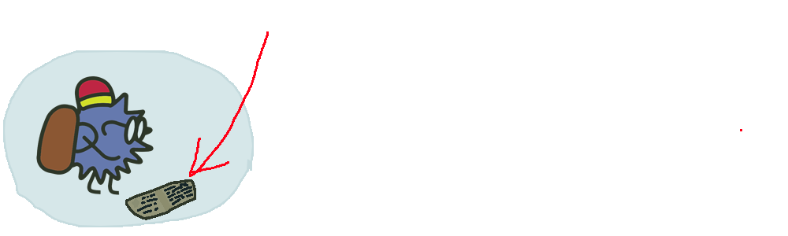

Меркурий
Ёж рассказывает
Меркурий — это планета Солнечной системы, которая находится ближе всего к Солнцу. Она названа в честь древнеримского бога
торговли и известна также как «дневная звезда». Меркурий является наименьшей планетой в Солнечной системе и имеет
диаметр около 4879 километров.
Меркурий обладает очень разреженной атмосферой, состоящей в основном из водорода, гелия и следов других газов. На поверхности
планеты есть кратеры, горы и долины, образованные в результате столкновений с метеоритами и тектонической активности.
Меркурий вращается вокруг своей оси очень медленно, совершая один оборот за 58,65 суток. Это означает, что день на Меркурии длится дольше,
чем год. Планета также обращается вокруг Солнца за 88 земных дней, что делает её самой быстрой планетой в Солнечной системе.
Из-за близости к Солнцу температура на Меркурии может колебаться от -173 °C до +427 °C. Это делает планету одним из самых
экстремальных мест во всей Солнечной системе.
Интересные факты:
1.Меркурий — самая близкая к Солнцу планета. Расстояние от Солнца до Меркурия составляет около 58 миллионов километров, что примерно в 3 раза меньше, чем расстояние от Земли до Солнца.
2. Меркурий — самая маленькая планета в Солнечной системе. Его диаметр составляет около 4879 километров, что делает его меньше Земли в 2–2,5 раза.
3. Меркурий невероятно быстр. Он мчится вокруг Солнца со скоростью около 172 километров в час, что делает его третьей по скорости планетой после Венеры и Земли.
А теперь, давай усвоим полученную информациюВперёд!
